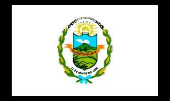

- Extensión territorial: 1223.61 km²
- Idioma: Español
- Tradiciones: Procesion de jesus cautivo.
- Alcalde: Francisco Salvador Hirezi Morataya.
- Poblacion: 288,022 hab.
- Fiestas patronales: 12-31 de diciembre, fiestas patronales
- Productos artesanales: Artesanias
- Sitios turísticos: 1.Turicentro Costa del Sol
2.Turicentro Ichanmichen
- Mapa
- Santa Ana
- Sonsonate
- Usulutan
- San Miguel
- Morazan
- La Union
- La Libertad
- Chalatenango
- Cuscatlan
- San Salvador
- La Paz
- Cabañas
- San Vicente